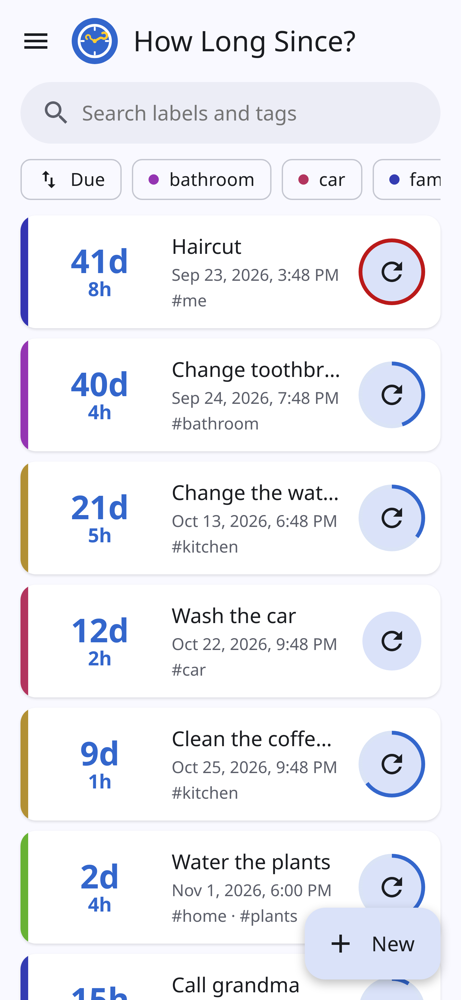
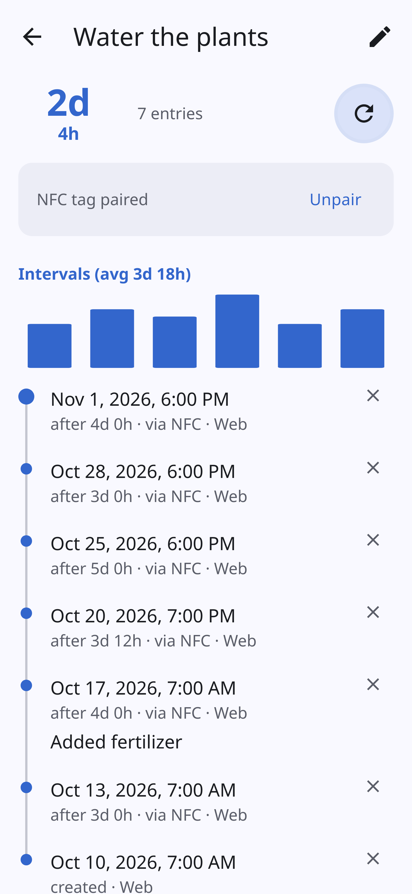
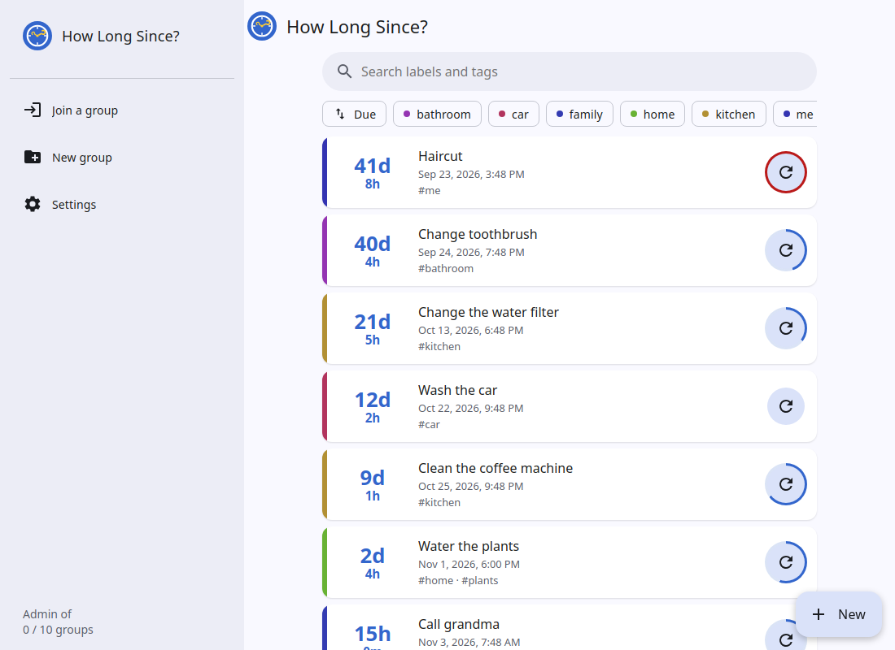

How long since you last …watered the plants?
A free, open-source app for Android and the web that tracks when you last did anything: changed the toothbrush, cleaned the coffee machine, had a haircut, called grandma. Tap once when you do it, and it counts the days for you.


Simple, on purpose
One card for each thing you want to keep track of. Nothing else to learn.
Days since, at a glance
Each card shows "12 days" since the last time, and the most overdue come first.
Reminders
Get a notification when something has gone too long, or let the app use your own average.
NFC tags
Stick a tag on the plant pot or the filter and tap it with your phone to log it, even with the app closed.
History and stats
Every time is logged, with notes, the gaps between them and your average interval.
Shared with your people
Put counters in a group and share it with family or flatmates, on phones and in any browser.
Private by design
Synced groups are end-to-end encrypted. No ads, no account, no tracking.
Your counters stay yours
When you share a group, your phone encrypts it before it leaves. The server stores a blob it can't read, and can't change it without your apps noticing.
- The server never sees labels, tags, notes or names
- Nor which person logged each reset
Groups for the whole household
Create a group, share a link or a QR code, and everyone sees the same counters. Whoever watered the plants, everyone knows.
- Single-use invites, valid for 24 hours
- Admins can see and revoke devices
- A recovery password brings everything back

On your phone and in your browser
The Android app has reminders, NFC tags, a home-screen widget and launcher shortcuts. The web app does the rest in any browser, and can be installed with its own window and icon.
Host your own server
The whole server is one small program of about 8 MB that runs in Docker. Point the apps at it, and your groups never touch anyone else's machine.
Free and open source
How Long Since? is GPL-3.0. Read the code, report a bug, or send a pull request.